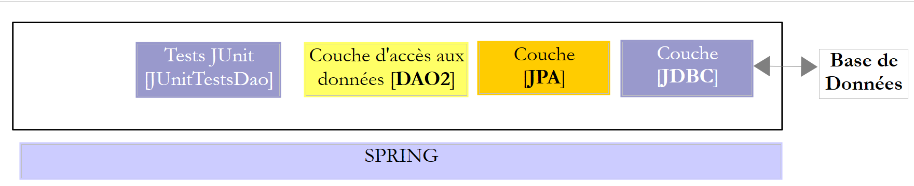
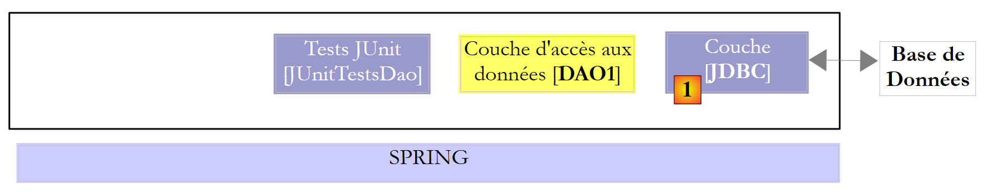

1. Introdução
O PDF deste documento está disponível |AQUI|.
Os exemplos deste documento estão disponíveis |AQUI|.
1.1. Contenu
Neste documento, propomos-nos a estudar diferentes configurações de exploração de uma base de dados. Consideremos a seguinte arquitetura em camadas:
 |
O fluxo de execução decorre da esquerda para a direita:
- é uma das classes da camada [ui] (Use Interface) que é executada em primeiro lugar. Esta irá instanciar as camadas [metier] e [dao]. Se a camada [ui] for uma interface gráfica, aguarda então as ações do utilizador. Uma ação deste último pode provocar a execução de métodos em todas as camadas da arquitetura até à base de dados. O resultado dessas execuções é apresentado ao utilizador de uma forma ou de outra;
O papel das diferentes camadas poderia ser o seguinte:
- a camada [JDBC] (Java DataBase Connectivity) é uma interface de acesso universal às bases de dados. Apresenta sempre a mesma interface à camada [DAO]. Se se mudar de SGBD, basta alterar o controlador JDBC. A camada [DAO] não se altera se tiverem sido respeitadas determinadas regras. No entanto, é difícil garantir uma portabilidade a 100% entre SGBD, uma vez que estes contêm frequentemente uma parte significativa de SQL proprietário que é difícil de ignorar, pois muitas vezes proporciona ganhos de desempenho. Assim que se utiliza o SQL proprietário, a portabilidade para o SGBD deixa de ser possível. Além disso, os SGBD têm frequentemente políticas diferentes de geração automática de chaves primárias, bem como palavras reservadas que não são as mesmas em todos os casos. Neste documento, conseguimos, no entanto, portar a arquitetura JDBC estudada para seis SGBD diferentes, aceitando que haja um projeto de configuração para cada um deles;
- a camada [DAO] expõe uma interface de acesso aos dados da base de dados específica utilizada (a distinguir da interface JDBC, que expõe métodos válidos para qualquer SGBD);
- a camada [métier] implementa as regras de gestão ou regras de negócio da aplicação.
- tem como dados de entrada os provenientes da base de dados através da camada [dao] e/ou os do utilizador que lhe são transmitidos pela camada [ui];
- ela produz dados que pode guardar na base de dados através da camada [dao] e/ou devolver à camada [ui] que a consultou, para apresentação ao utilizador;
- a camada [ui] é a camada que executa as ações do utilizador e lhe devolve os resultados dessas ações;
No exemplo acima, a camada [DAO] envia pedidos SQL à camada [JDBC] para execução na camada SGBD. Desde há alguns anos (2006), esta arquitetura pode evoluir da seguinte forma:
 |
Agora é a camada JPA (Java Persistence API) que envia as solicitações SQL para a camada JDBC e recebe os resultados. A camada [JPA] apresenta à camada [DAO] operações para persistir, modificar, eliminar e obter objetos. A camada [DAO] já não emite ordens SQL. Esta abordagem é mais portátil, uma vez que as implementações JPA gerem as diferenças em relação à SGBD, mas é mais lenta do que a tecnologia JDBC. Iremos realizar testes de desempenho para o demonstrar. A tecnologia JPA formaliza o trabalho realizado pelo framework Hibernate [http://hibernate.org/] há vários anos.
Iremos estudar duas camadas [DAO] com uma das duas arquiteturas seguintes:
 |
 |
Exigiremos que as camadas [DAO1] e [DAO2] implementem a mesma interface [IDAO]. Assim, o teste [JUnitTestsDao] será o mesmo para ambas as configurações e permitir-nos-á comparar os desempenhos. A camada [DAO1] será implementada com o Spring JDBC e a camada [DAO2] com o Spring JPA;
Feito isto, iremos expor a interface [IDAO] na Web da seguinte forma:
 |
- em [1], a camada [IDAO] é exposta na Web através de uma camada Web [2] implementada pelo Spring MVC. É, de facto, a interface [IDAO] que está exposta e iremos construir duas versões do serviço web, consoante esta interface seja implementada com uma arquitetura [DAO-JDBC] ou [DAO-JPA-JDBC];
- Em [B], um cliente remoto utiliza as URL expostas pelo serviço web e que dão acesso aos métodos da camada [IDAO-serveur]. Asseguraremos que a camada [DAO-Client] [3] implemente a interface [IDAO-serveur] [1]. Isto permitir-nos-á utilizar o mesmo teste [JUnitTestsDao], já utilizado duas vezes ([4]);
- no [3], a camada [DAO-client] será implementada com o Spring RestTemplate;
Feito isto, iremos proteger o acesso ao serviço web:
 |
- em [5], o pedido HTTP do cliente passa por uma camada de autenticação implementada com o Spring Security;
Feito isto, evoluiremos a arquitetura anterior para a seguinte:
 |
- em [3], a aplicação do cliente é, ela própria, uma aplicação web. Esta apresentará um formulário [5] que permite consultar os URL do serviço web seguro. Os acessos HTTP ao serviço web seguro serão efetuados através de uma camada [DAO-client-js] implementada em JavaScript. Esta arquitetura implementa o que se denomina «pedidos entre domínios»:
- o serviço web [2] apresenta URL com o formato [http://machine1:port1/];
- a aplicação web cliente [3] é descarregada a partir de uma URL [http://machine2:port2/]. Se [http://machine2:port2/] não for idêntico a [http://machine1:port1/] (mesma máquina, mesma porta), então o navegador do cliente bloqueará as chamadas HTTP da camada [DAO-client-js]. Para resolver este problema, o serviço web deve autorizar as solicitações entre domínios. Veremos como;
Os projetos apresentados foram testados com os seguintes seis SGBD:
- MySQL 5 Community Edition;
- SQL Server 2014 Express;
- PostgreSQL 9.4;
- Oracle Express 11g versão 2;
- IBM DB2 Express-C 10.5;
- Firebird 2.5.4;
Para cada um destes SGBD, foram desenvolvidas quatro camadas [DAO] diferentes:
- uma camada implementada com o Spring JDBC;
- uma camada implementada com o Spring JPA e o fornecedor JPA Hibernate;
- uma camada implementada com o Spring JPA e o fornecedor JPA EclipseLink;
- uma camada implementada com o Spring JPA e o fornecedor JPA OpenJPA;
Trata-se, portanto, de um conjunto de vinte e quatro configurações diferentes que aqui se apresenta. Foi feito um grande esforço de fatorização:
- a maior parte do código é escrita apenas uma vez. Baseia-se em dois projetos Maven de configuração:
- um configura a camada JDBC;
- o outro configura a camada JPA;
 |
 |
O projeto de configuração Maven da camada JDBC [1] de um SGBD específico consiste em dois pontos:
- importar o arquivo do controlador JDBC;
- definir as credenciais de acesso à base de dados utilizada e os diferentes comandos SQL que a camada [DAO1] irá enviar para o controlador JDBC. Embora o SQL seja padronizado, surgiram problemas de portabilidade, essencialmente devido à presença, nas consultas, de nomes de tabelas/colunas que se revelaram ser palavras-chave proibidas em certos SGBD (tabela ROLES para DB2, coluna PASSWORD para Firebird). Além disso, embora um nome de coluna seja normalmente insensível à maiúscula/minúscula, verificou-se um problema com o PostgreSQL relativamente à coluna ID da chave primária das tabelas. O sistema exigiu que esta se chamasse id, toda em minúsculas. Trata-se de problemas típicos de portabilidade inesperados;
Os três projetos Maven de configuração da camada JPA [2] de um SGBD específico consistem também em dois pontos:
- importar o arquivo da implementação JPA;
- configurar a implementação JPA utilizada para o SGBD específico ligado. Com efeito, é a camada JPA que emite as ordens SQL para a camada JDBC. Para ser eficaz, tem de conhecer o SGBD, a fim de lhe enviar as ordens SQL que este reconhecerá. Estas ordens poderão utilizar o SQL, proprietário deste SGBD, bem como as características específicas deste último (tipos de dados, sequências, triggers, procedimentos, geração automática de chaves primárias, etc.);
Temos, assim, vinte e quatro projetos (4 configurações x 6 SGBD) de configuração do Maven nos quais se basearão todos os outros projetos de exploração da base de dados. Nos esquemas acima, uma vez que as camadas [DAO1] e [DAO2] oferecem a mesma interface, as 24 configurações das duas arquiteturas acima serão testadas com uma única classe de teste [JUnitTestsDao]. Uma vez verificadas estas arquiteturas, não há mais dificuldades:
- o projeto Maven para a publicação da base de dados na Web assenta nestas duas arquiteturas. Existem, portanto, também aqui 24 configurações possíveis;
- o projeto Maven para a segurança do acesso ao serviço web baseia-se no projeto anterior e tem, por sua vez, 24 configurações possíveis;
- por fim, o projeto Maven que permite as solicitações entre domínios ao serviço web seguro baseia-se no projeto anterior e também tem 24 configurações possíveis;
O estudo é realizado com o SGBD, o MySQL5 e a implementação JPA do Hibernate. Em seguida, procede-se à adaptação para as implementações JPA (Eclipselink) e OpenJPA. Em seguida, faz-se a adaptação para as outras bases de dados (PostgresQL, Oracle, SQL Server, DB2, Firebird).
Este curso destina-se a principiantes. A maior parte dos conceitos utilizados é explicada. Não é necessário ter conhecimentos de programação de bases de dados nem de programação web. No entanto, são necessários conhecimentos sólidos da linguagem SQL, uma vez que as consultas SQL utilizadas não são explicadas.
Para compreender os exemplos, é necessário um conhecimento básico da linguagem Java, que pode ser adquirido em qualquer curso de introdução a esta linguagem. Os dois primeiros capítulos do documento [Introduction au langage Java] são suficientes. Trata-se de um documento antigo (de 1998, revisto em 2002), mas os conceitos básicos estão lá. Para um curso completo, pode-se ler o extenso livro de Jean-Marie Doudoux, [http://www.jmdoudoux.fr/java].
Este documento não é, de forma alguma, exaustivo. Destina-se apenas a fornecer uma metodologia e códigos que possam ser reutilizados em contextos semelhantes. O documento foi escrito de forma a poder ser lido sem necessidade de um computador à mão. Por isso, são apresentadas muitas capturas de ecrã.
Embora não aborde todas as capacidades da linguagem Java nem todos os seus domínios de aplicação, este documento pode ser utilizado como material de aprendizagem da linguagem. Se seguir este documento, mesmo que não na íntegra, o leitor iniciante atingirá um nível «Java avançado», tanto na utilização da linguagem como na do framework Spring. Poderá então prosseguir a sua formação em Java com as seguintes obras:
- [Introdução ao Spring MVC e ao Thymeleaf através de exemplos (2015)], que aprofunda a aprendizagem do ecossistema Spring ao apresentar o seu ramo «programação web MVC»;
- [Um exemplo de cliente/servidor - AngularJS 1.x / Spring 4 (2014)], que apresenta uma arquitetura web cliente/servidor, em que o cliente é implementado com o framework [AngularJS] e o servidor com [Spring MVC];
- [Introdução ao Java EE com o IDE NetBeans e o servidor de aplicações GlassFish (2012)], que abandona o ecossistema Spring em favor de uma arquitetura web baseada em JSF (Java Server Faces) e EJB (Enterprise Java Bean);
- [Introdução à programação de tablets Android com o Android Studio (2016)], que descreve uma arquitetura cliente/servidor, em que o cliente é um tablet Android e o servidor é um serviço web implementado pelo Spring MVC;
1.2. Sources
Este documento tem duas fontes principais:
- [ref1] : [Introdução ao Spring MVC e ao Thymeleaf através de exemplos (2015)]. O presente documento retoma, com outra base de dados, o trabalho realizado e apresentado em [ref1]. Simplesmente, retira-o do contexto da programação web com Spring MVC. Foi porque considerei que os códigos e a metodologia utilizados no [ref1] para expor uma base de dados na Web eram reutilizáveis que decidi criar um documento separado;
- [ref2] : [Persistência em Java 5 através da prática (2007)];
Para aprofundar os conhecimentos sobre o Spring, podem ser consultadas as seguintes referências:
- o documento de referência do framework Spring [http://docs.spring.io/spring/docs/current/spring-framework-reference/pdf/spring-framework-reference.pdf];
- inúmeros tutoriais sobre o Spring podem ser encontrados em URL e [http://spring.io/guides];
- o site de [developpez.com] dedicado ao Spring [http://spring.developpez.com/];
- o tutorial [http://www.tutorialspoint.com/spring/spring_tutorial.pdf];
O leitor com conhecimentos SQL insuficientes poderá adquirir os conceitos básicos com a obra [Introdução à linguagem SQL com o SGBD Firebird (2006)].
1.3. As ferramentas utilizadas
Os exemplos que se seguem foram testados no seguinte ambiente:
- computador com Windows 8.1 Pro de 64 bits;
- JDK 1.8 (parágrafo 23.1);
- IDE Spring Tool Suite 3.6.3 (parágrafo 1);
- navegador Chrome (não foram utilizados outros navegadores);
- extensão do Chrome [Advanced Rest Client] (parágrafo 1);
- SGBD MySQL 5.6 Community Edition (parágrafo 23.4);
- SGBD SQL Server 2014 Express (parágrafo 23.9);
- SGBD PostgreSQL 9.4 (parágrafo 23.7);
- SGBD Oracle Express 11g versão 2 (parágrafo 23.6);
- SGBD IBM DB2 Express-C 10.5 (parágrafo 23.8);
- SGBD Firebird 2.5.4 (parágrafo 23.10);
- os clientes do EMS Manager dos seus seis SGBD (parágrafo 23.5);
Atenção ao JDK 1.8. Um dos casos de estudo utiliza um método do pacote [java.lang] do Java 8.
A maioria dos exemplos são projetos Maven que podem ser abertos tanto no IDE Eclipse, no IntellijIDEA como no NetBeans. A seguir, as capturas de ecrã provêm do IDE Spring Tool Suite, uma variante do Eclipse.
1.4. Os exemplos
Os exemplos estão disponíveis no URL [http://tahe.developpez.com/java/spring-database] sob a forma de um ficheiro zip para descarregar.
 |
- em [1], as pastas dos exemplos;
- em [2], a pasta [spring-core] contém os projetos de aprendizagem do Spring;
- em [3], a pasta [spring-database-config] contém os projetos de configuração JDBC e JPA das seis bases de dados;
 |
- em [4], a configuração do Oracle SGBD. Nela encontram-se três pastas:
- [databases] contém os scripts SQL para a geração das duas bases de dados utilizadas pelo documento;
- [jdbc-driver] contém o controlador JDBC da Oracle, bem como um script para a sua instalação no repositório Maven local;
- O [eclipse] contém os quatro projetos de configuração da Oracle:
- [oracle-config-jdbc] configura a camada JDBC de acesso ao SGBD;
- [oracle-config-jpa-hibernate] configura a camada JPA de acesso ao SGBD com o fornecedor JPA Hibernate;
- [oracle-config-jpa-eclipselink] configura a camada JPA de acesso ao SGBD com o fornecedor JPA Eclipselink;
- [oracle-config-jpa-openjpa] configura a camada JPA de acesso ao SGBD com o fornecedor JPA OpenJPA;
- em [6], a pasta [eclipse config / launch configurations] contém as configurações de execução que o utilizador poderá importar para o Eclipse para, posteriormente, as adaptar ao seu próprio ambiente;
 |
- em [7], a pasta [spring-database-generic] contém todo o código de acesso ao SGBD, comum aos seis SGBD e aos três fornecedores JPA;
- no [8], o [spring-jdbc] contém quatro projetos que incluem o API, o JDBC e o Spring JDBC;
- em [9], o [spring-jpa / spring-jpa-generic] é o projeto que utiliza uma camada JPA para aceder a uma base de dados. Os projetos [generic-create-db*] são projetos JPA que permitem criar as bases de dados utilizadas pela camada JPA;
 |
-
no [10], a pasta [spring-webjson] contém os projetos que expõem a base de dados na Web;
- [spring-webjson-server-jdbc-generic] é o serviço web que expõe a base de dados acedida através do Spring JDBC;
- [spring-webjson-server-jpa-generic] é o serviço web que expõe a base de dados acedida através do Spring JPA;
- [spring-webjson-client-generic] é o único cliente que permite aceder aos dois serviços web anteriores;
-
em [11], a pasta [spring-security] contém os projetos que expõem a base de dados na Web com acesso seguro;
- [spring-security-server-jdbc-generic] é o serviço web seguro que expõe a base de dados acedida através do Spring JDBC;
- [spring-security-server-jpa-generic] é o serviço web seguro que expõe a base de dados acedida através do Spring JPA;
- [spring-security-client-generic] é o único cliente que permite aceder aos dois serviços web seguros anteriores;
-
em [12], a pasta [spring-cors] contém os projetos que expõem a base de dados na Web com um acesso seguro que permite acessos entre domínios, tais como os provenientes do código JavaScript de um navegador;
- [spring-cors-server-jdbc-generic] é o serviço web seguro que permite o acesso entre domínios e que expõe a base de dados acedida com o Spring JDBC;
- [spring-cors-server-jpa-generic] é o serviço web seguro que permite o acesso entre domínios e que expõe a base de dados acedida através do Spring JPA;
- [spring-cors-client-generic] é uma aplicação web que permite consultar os dois serviços web anteriores;